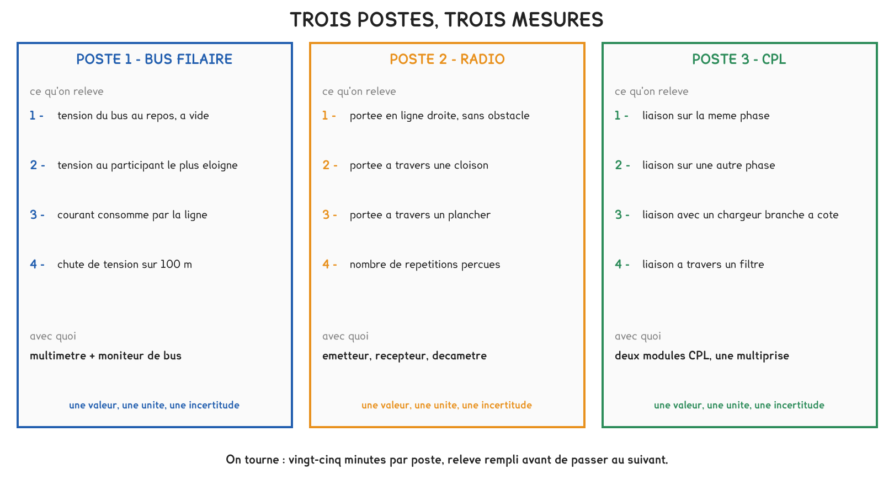
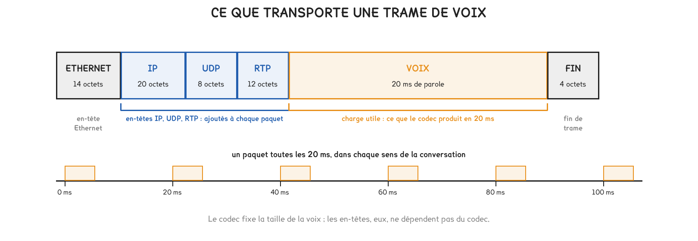

BTS FED option C · 1re année
Récapitulatif et approfondissements - Communiquersemaines 4 à 10
Sept semaines sur le bloc communication, celui qui distingue l'option C. Les formules de chaque média, les limites d'une ligne et d'un lien, le réseau IP, la CEM, le VDI, la téléphonie et les protocoles, puis de quoi vous vérifier avant le devoir É1 de la semaine 10.
5 outils · 10 questions · 8 exercices · 7 replis · 6 figures
Savoirs travaillés
Les formules de la séquence
| Ce que je cherche | Formule ou règle | Unités ou limite |
|---|---|---|
| Chute de tension, participants regroupés au bout | ΔU = r × I × L | r = 0,075 Ω/m, I en A, L en m |
| Chute de tension, participants répartis | ΔU = ½ × r × I × L | même unités ; le ½ vient de la répartition |
| Budget de tension d’une ligne | 30 V − 21 V = 9 V | 21 V au moins chez le dernier participant |
| Seconde alimentation | à 200 m de câble au moins de la première | chaque participant à 350 m au plus d’une alimentation |
| Adresse physique KNX | zone.ligne.participant | Z.L.0 coupleur de ligne ; Z.0.0 coupleur de zone ; 15 lignes par zone |
| Affaiblissement radio | distance + parois, en dB | doubler la distance coûte 6 dB ; marge de 10 dB à réserver |
| Impédance d’un condensateur | Z = 1 / (2 π f C) | f en Hz, C en farads |
| Bilan d’une liaison optique | marge = budget − (fibre + connexions + épissures) | 3,5 dB/km en OM3, 0,4 dB/km en OS2, L en km ; 0,75 dB par connexion, 0,3 dB par épissure |
| Adresse IPv4 en /24 | trois octets de réseau, un octet d’équipement | .0 et .255 réservées, 254 adresses utilisables |
| Puissance PoE par port, côté commutateur | 15,4 W (802.3af), 30 W (802.3at), 60 ou 90 W (802.3bt) | 100 m de câble au plus |
| Budget PoE | somme des puissances réservées port par port | comparée au budget total du commutateur |
| Lien VDI | 90 m de lien permanent, 100 m de canal | 10 m pour les deux cordons ensemble |
| Longueur d’après le délai | L = NVP × 0,3 m/ns × délai | délai en ns |
| Marge d’un procès-verbal | limite − mesure pour une grandeur plafonnée ; mesure − limite pour une grandeur minimale | positive si conforme |
| Débit d’un appel | trame × 8 × paquets par seconde | voix par paquet = 64 000 × durée ÷ 8, en octets ; 40 octets IP, UDP, RTP ; 18 octets Ethernet |
| Ligne 100 V | Z = U² / P | U = 100 V, P en W, Z en Ω |
| Un registre Modbus | seize bits, sans type ni unité | le sens est dans la table du fabricant |
Chaque média a un budget : des volts pour le bus, des décibels pour la radio et la fibre, des watts pour le PoE, des mètres pour le cuivre. Dimensionner, c’est dépenser ce budget sans le dépasser, et garder une marge.
Semaine 4 · les médias et leurs budgets
Sur un bus KNX TP1, la même paire transporte les télégrammes et l’alimentation. Le courant fait l’aller et le retour : la résistance qui compte est celle de la boucle, 75 Ω par kilomètre, soit 0,075 Ω par mètre.
ΔU = r × I × L
- ΔU: chute de tension, en volts
- r: résistance de boucle, 0,075 Ω/m
- I: courant qui traverse le câble, en ampères
- L: longueur de câble, en mètres
Valable lorsque tout le courant traverse la longueur L : les participants sont regroupés au bout.
En radio, les affaiblissements s’additionnent : celui de la distance, puis celui de chaque paroi traversée. La portée annoncée en champ libre donne le budget de l’émetteur.
| Distance sans obstacle | 5 m | 10 m | 15 m | 20 m | 30 m | 50 m | 100 m | 300 m |
|---|---|---|---|---|---|---|---|---|
| Affaiblissement, en dB | 45 | 51 | 55 | 57 | 61 | 65 | 71 | 81 |
| Paroi traversée | Affaiblissement |
|---|---|
| Cloison en plaque de plâtre | 3 dB |
| Mur en brique ou en parpaing | 8 dB |
| Mur en béton armé | 20 dB |
| Plancher en béton | 25 dB |
| Vitrage à couche métallique | 20 dB |
Doubler la distance coûte 6 dB ; un mur en béton armé en coûte 20, autant que multiplier la distance par dix. Une liaison sans marge fonctionne le jour de la réception et devient intermittente ensuite : on réserve 10 dB.
Le CPL passe mal d’une phase à l’autre sans coupleur de phases, et ne franchit pas le transformateur. Un changement de phase peut interrompre la liaison ; une charge électronique l’atténue. Le client décrit les deux cas de la même façon, le diagnostic n’est pas le même.
Marge = budget − (fibre + connexions + épissures)
- budget: puissance émise minimale moins sensibilité du récepteur, en dB
- fibre: dB/km × longueur en km ; 3,5 dB/km en OM3, 0,4 dB/km en OS2
- connexion: 0,75 dB au plus ; épissure : 0,3 dB au plus
Sur quelques centaines de mètres, les connexions et les épissures pèsent davantage que la fibre.
Semaine 4 · l’atelier : mesurer sur trois médias

Une mesure ne permet de conclure que si l’écart dépasse l’incertitude de l’appareil ; sinon, la bonne réponse est qu’on ne peut pas trancher. Une portée radio se retient au plus court de trois essais, jamais à la moyenne.
Le courant total de la ligne divisé par le nombre de participants redonne les 10 mA normalisés. La chute mesurée sur 100 m s’extrapole à 350 m ; le CPL se teste en changeant de phase, puis en ajoutant une charge.
Semaine 5 · topologie, adressage, coupleurs

ΔU = ½ × r × I × L
- I: courant fourni par l’alimentation, en ampères
- L: longueur de l’alimentation au dernier participant, en mètres
Pour des participants répartis régulièrement. Regroupés au bout, le facteur ½ disparaît.
Le calcul suppose des participants répartis. Une ligne dont les participants sont regroupés loin de l’alimentation peut respecter les 350 m et ne pas fonctionner : la règle tombe dès que son hypothèse tombe.
| Champ de l’adresse | Valeurs | La valeur 0 désigne |
|---|---|---|
| Zone | 0 à 15 | la dorsale |
| Ligne | 0 à 15 | la ligne principale de la zone |
| Participant | 0 à 255 | le coupleur de la ligne, ou de la zone |
L’adresse physique dit où se trouve un appareil. Le coupleur sépare électriquement les lignes, chacune avec sa propre alimentation, et filtre les télégrammes de groupe : il ne transmet que ceux qui sont attendus de l’autre côté.
Semaine 6 · le réseau IP du bâtiment
192.168.20.65 /24
- 192.168.20: partie réseau, commune à tous les équipements du réseau
- 65: partie équipement, propre à chacun
- /24: masque 255.255.255.0, trois octets pour le réseau
- .0 et .255: adresse du réseau et adresse de diffusion, réservées
La passerelle par défaut est l’adresse du routeur dans le réseau de l’équipement.
Le commutateur relie les équipements d’un même réseau, par l’adresse MAC. Le routeur relie des réseaux différents, par l’adresse IP. Une configuration se vérifie sur trois réglages, adresse, masque, passerelle, et non sur la seule présence de l’image.

- Compter les ports : équipements PoE, équipements en 230 V, liaison vers le routeur.
- Vérifier chaque port : la puissance de la classe de l’équipement ne dépasse pas ce que le port fournit.
- Additionner les puissances réservées et les comparer au budget PoE total.
Un commutateur peut avoir assez de ports sans avoir assez de puissance, et un port peut être libre sans pouvoir alimenter un équipement trop puissant. Les deux vérifications se font toutes les deux, dans cet ordre.
Semaine 7 · la CEM en courant faible
Toute perturbation suppose trois termes : une source, un couplage, une victime. Supprimer un seul terme suffit, et dans un bâtiment c’est presque toujours sur le couplage que porte la protection, la source et la victime étant imposées.
| Mode | Par quoi | L’indice qui le trahit |
|---|---|---|
| Par conduction | un conducteur commun | le défaut suit l’alimentation |
| Capacitif | le champ électrique, entre câbles voisins | grande longueur commune, tension à fronts raides |
| Inductif | le champ magnétique, dans une boucle | forte variation de courant, grande boucle |
| Rayonné | un champ électromagnétique, à distance | le défaut suit la position de l’émetteur |
- Garder les paires torsadées jusqu’au raccordement.
- Séparer puissance et courants faibles : chemins distincts, cloison métallique, ou 30 cm environ.
- Croiser à angle droit.
- Raccorder les écrans sur tout leur pourtour.
- Relier les masses entre elles : chemins de câbles continus, liaisons équipotentielles.
Deux prises de terre distinctes ne sont jamais au même potentiel. Un écran ou un conducteur qui les relie forme une boucle de masse et devient le chemin de la foudre. Entre deux bâtiments, la liaison de référence est la fibre, qui ne conduit aucun courant.
Semaine 8 · VDI : du câble au procès-verbal

La catégorie qualifie un composant ; la classe qualifie un lien installé, de bout en bout. Un lien ne dépasse jamais la classe de son composant le plus faible, et seule la certification établit sa classe.
| Catégorie | Classe | Fréquence maximale |
|---|---|---|
| 5e | D | 100 MHz |
| 6 | E | 250 MHz |
| 6A | EA | 500 MHz |
| 7A | FA | 1 000 MHz |
Marge = écart à la limite, positive si conforme
- grandeur plafonnée(longueur, perte d’insertion) : marge = limite − mesure
- grandeur minimale(paradiaphonie, affaiblissement de réflexion) : marge = mesure − limite
Le verdict d’un lien est celui de sa marge la plus défavorable, à quelque fréquence qu’elle se trouve.
Une paradiaphonie élevée est favorable : la valeur mesure l’affaiblissement du signal parasite qui passe d’une paire à sa voisine. Plus elle est grande, mieux la paire voisine est protégée. Se tromper de sens inverse le verdict.
Une certification a exactement la forme d’un essai : une mesure, une norme de référence, un verdict et un rapport. C’est la forme de la situation de CCF de l’épreuve E5, en semaine 18.
Semaine 9 · téléphonie IP et multimédia

Débit sur le câble = taille de la trame × 8 × paquets par seconde
- voix par paquet: débit du codec × durée du paquet ÷ 8, en octets
- taille de la trame: voix + 40 octets IP, UDP, RTP + 18 octets Ethernet
- paquets par seconde: 1 ÷ durée du paquet
Le débit se compte dans chaque sens de la conversation.
64 kbit/s est le débit de la voix, pas celui de l’appel. Les en-têtes s’ajoutent à chaque paquet, quel que soit le codec : le débit réel sur le câble est toujours supérieur à celui du codec.
| Grandeur | Ce qu’elle mesure | Valeur usuelle à respecter |
|---|---|---|
| Délai | le temps de bout en bout, dans un sens | 150 ms au plus |
| Gigue | la variation de ce délai | 30 ms au plus |
| Pertes | les paquets qui n’arrivent pas | 1 % au plus |
SIP établit et libère l’appel ; la voix circule ensuite de poste à poste en RTP. Un poste IP s’arrête avec son commutateur : commutateur, IPBX et routeur sont secourus par un onduleur. Sur une ligne 100 V, les haut-parleurs sont en parallèle et Z = U² / P.
Semaine 10 · protocoles et interopérabilité
Un protocole fixe trois choses : sur quel support les données circulent, qui prend la parole et quand, sous quelle forme les données sont écrites. Deux systèmes se comprennent quand les trois couches concordent, et c’est la couche du haut, celle du sens, qui décide.
« Les deux appareils sont en Modbus, ils vont se comprendre. » Un registre Modbus contient seize bits sans type ni unité : si les tables de registres diffèrent, un courant en centièmes d’ampère s’affiche comme une puissance en watts, sans aucune alarme.
Une passerelle ne devine rien : elle traduit les points inscrits dans sa table, avec leur type, leur sens et leur échelle. Un point absent de la table n’existe pas pour l’autre système.
Cette dixième semaine ouvre la suite : le devoir É1 porte sur les semaines 1 à 9, et les protocoles servent en semaine 11, puis dans le TP noté de la semaine 14.
Vous vérifier
- La résistance à prendre pour la chute de tension d’un bus est celle : de la boucle, aller et retour | d’un seul conducteur | du blindage du câble
- Pour des participants répartis, la chute le long d’une ligne vaut : la moitié de r × I × L | r × I × L | le double de r × I × L
- Doubler la distance entre un émetteur radio et son récepteur coûte : 6 dB | 2 dB | 20 dB
- Le signal CPL ne franchit pas : le transformateur du poste | la prise voisine | une cloison en plâtre
- L’adresse 2.3.0 désigne : le coupleur de la ligne 3 de la zone 2 | le participant 3 de la zone 2 | le coupleur de la zone 3
- Relier deux réseaux IP différents est le rôle : du routeur | du commutateur | du panneau de brassage
- Un port PoE+ (802.3at) fournit au plus : 30 W | 15,4 W | 90 W
- Une perturbation se supprime en agissant sur : un seul des trois termes | les trois termes à la fois | la victime seulement
- Le lien permanent mesure au plus : 90 m | 100 m | 110 m
- Pendant la conversation, la voix circule : de poste à poste, en RTP | par l’IPBX, en SIP | par le trunk de l’opérateur
Pour aller plus loin
Pour aller plus loin
Pourquoi les décibels s'additionnentPour aller plus loin›
Un décibel exprime un rapport de puissances : 10 × log(P₂ / P₁). Trois valeurs suffisent à tout lire : 3 dB pour un facteur 2, 10 dB pour un facteur 10, 20 dB pour un facteur 100.
Multiplier deux atténuations revient à additionner leurs logarithmes. Un mur de 8 dB derrière 10 m à 51 dB font 59 dB, soit une puissance reçue divisée par près de 800 000. C’est ce qui rend le calcul radio si rapide : on additionne, on compare au budget.
Le dBm des bilans optiques est la même échelle, rapportée à 1 mW : 0 dBm vaut 1 mW, −10 dBm vaut 0,1 mW. Une différence de deux dBm redonne des dB.
Le masque autrement qu'en /24Pour aller plus loin›
Le nombre d’adresses utilisables vaut 2 puissance (32 − n), moins les deux adresses réservées. En /24, 256 − 2 = 254. En /25, 128 − 2 = 126 ; en /26, 62 ; en /23, 512 − 2 = 510.
Un réseau technique de quarante équipements tient dans un /26, mais le découpage se fait rarement plus fin que le /24 dans un bâtiment : la réserve ne coûte rien, et un plan lisible vaut mieux qu’un plan serré.
L’outil de plan IP de cette page accepte n’importe quel masque : essayer un /25 sur la même adresse et regarder ce que deviennent le réseau et la diffusion.
Pourquoi deux puissances par classe en PoEPour aller plus loin›
Le câble dissipe une partie de la puissance par effet Joule. En PoE, le port délivre au moins 44 V sous 350 mA, soit 15,4 W. Sur 100 m, la boucle du câble peut atteindre 20 Ω : les pertes valent 20 × 0,35², soit 2,45 W.
L’équipement ne dispose donc que de 12,95 W. Le commutateur fournit la puissance de l’équipement et celle des pertes : il se dimensionne sur la puissance côté port, celle de la table.
C’est aussi pourquoi la limite des 100 m vaut pour l’alimentation comme pour les données : plus loin, les pertes mangent la marge.
Un écran relié aux deux bouts, ou à un seul ?Bureau d'études›
Relié à ses deux extrémités, un écran protège bien contre les perturbations de haute fréquence. Il relie aussi les masses des deux extrémités : si elles ne sont pas au même potentiel, un courant à 50 Hz circule en permanence dans l’écran.
La réponse n’est pas de déconnecter un côté, ce qui fait perdre l’essentiel de la protection. Elle consiste à relier les masses entre elles par un réseau maillé, de façon qu’elles restent au même potentiel.
Vers un équipement extérieur doté de sa propre terre, on sort du dilemme par la fibre. Elle impose alors une alimentation locale et permanente pour la caméra, qui ne peut plus être alimentée par son câble.
Pourquoi le lien fixe s'arrête à 90 mPour aller plus loin›
La limite de 90 m réserve 10 m aux cordons, que l’exploitant choisira plus tard et que l’installateur ne connaît pas. Chaque mètre de lien fixe au-delà de 90 m serait pris sur la longueur des cordons.
Une seconde raison s’y ajoute : un cordon est souple, et il affaiblit davantage le signal par mètre qu’un câble rigide. La limite du canal a été calculée pour 90 m de câble et 10 m de cordons ; c’est ce partage qui la rend tenable.
La réception porte sur le lien permanent, parce que c’est l’ouvrage de l’installateur, et qu’il reste en place toute la vie du bâtiment.
Compresser la voix ne divise pas le débit d'autantPour aller plus loin›
En G.711 avec des paquets de 20 ms, la voix pèse 160 octets et la trame 218 : 87,2 kbit/s sur le câble. Le G.729 compresse la voix à 8 kbit/s, huit fois moins : la voix d’un paquet tombe à 20 octets.
Mais les 58 octets d’en-têtes ne bougent pas. La trame pèse 78 octets, et le débit 31,2 kbit/s : le codec est huit fois plus léger, l’appel moins de trois fois. Sur un réseau local, on garde le G.711 ; le G.729 sert sur les liens étroits.
La voix téléphonique s’arrête à 3 400 Hz, d’où les 8 000 échantillons par seconde du G.711, codés chacun sur 8 bits.
Vérifier une table de registres sur siteBureau d'études›
La méthode consiste à lire une valeur connue. La tension du réseau, voisine de 230 V, doit apparaître quelque part sous la forme 2 300 si elle est écrite en dixièmes de volt. Le courant lu doit concorder avec une mesure à la pince, et la puissance avec le produit de la tension et du courant.
Si la valeur connue apparaît dans le registre voisin de celui qui était attendu, la configuration présente un décalage d’une unité : les documentations ne numérotent pas toujours les registres comme le protocole.
Une supervision mise en service sans cette vérification affiche des nombres plausibles et faux. C’est le défaut le plus long à découvrir, parce qu’aucune alarme ne le signale.
S’entraîner
Les valeurs attendues ne sont pas dans la page : elle vous dit si c’est juste et vous rappelle la méthode. Le corrigé reste dans le polycopié.
Exercice · D2-1
Le budget d’un commutateur
Un commutateur doit alimenter 8 contrôleurs de porte de classe 3 (15,4 W réservés par port), 4 postes IP de classe 2 (7,0 W) et 2 bornes Wi-Fi de classe 4 (30 W).
Quelle puissance totale le commutateur doit-il réserver ?
Exercice · D2-1
L’adresse de diffusion
Le réseau technique d’un immeuble est 192.168.30.0 /24.
Quelle est son adresse de diffusion ?
Exercice · D2-1
La ligne du plateau
Une ligne KNX TP1 porte 60 participants répartis régulièrement sur 320 m, depuis son alimentation de 30 V. Chaque participant consomme 10 mA.
Quelle tension reste-t-il au dernier participant ?
Exercice · D1-1
Le détecteur du garage
Un émetteur radio dont le budget vaut 81 dB commande un récepteur situé à 10 m, derrière une cloison en plaque de plâtre et un mur en brique. Les tableaux de la semaine 4 donnent les affaiblissements.
Quelle marge reste-t-il sur ce trajet ?
Exercice · D1-1
La rocade vers l’étage
Une rocade en fibre multimode OM3 mesure 250 m. Elle comporte quatre connexions et deux épissures. Le budget des modules vaut 7,5 dB.
Quelle marge reste-t-il sur cette liaison ?
Exercice · D2-2
La classe du lien
Un installateur pose un câble, des prises et un panneau de catégorie 6A, et fait certifier le lien permanent.
Quelle classe le procès-verbal peut-il annoncer, au mieux ?
Exercice · D2-3
Des paquets de 10 ms
Un IPBX envoie la voix en G.711 par paquets de 10 ms. Les en-têtes IP, UDP et RTP font 40 octets, l’en-tête et la fin de trame Ethernet 18 octets.
Quel est le débit sur le câble, dans un sens ?
Exercice · D2-2
Le lien de 96 mètres
À la certification, un lien permanent mesure 96 m. Tous ses composants sont de catégorie 6 et toutes ses autres mesures sont conformes. L’installateur veut le déclarer réussi. Expliquer en quatre lignes pourquoi il ne le peut pas, et ce qu’il peut proposer.
- J’ai distingué le lien permanent et le canal, et donné la limite de chacun
- J’ai dit que la longueur au-delà de 90 m serait prise sur les 10 m des cordons
- J’ai dit qu’un lien est jugé sur sa marge la plus défavorable, ici négative
- J’ai proposé une solution, raccourcir le cheminement, rapprocher le sous-répartiteur ou passer en fibre
Le jour du contrôle
Le devoir surveillé É1 dure deux heures et porte sur les semaines 1 à 9 : le socle de la préparation précédente en fait partie. Les questions de calcul suivent toutes le même chemin.
- Repérer la grandeur cherchée et le média concerné : le budget n’est pas le même.
- Écrire la formule en lettres avant tout nombre.
- Convertir : les milliampères en ampères, les mètres de fibre en kilomètres, les octets en bits, les nanofarads en farads.
- Calculer, puis comparer à la limite : 21 V, 10 dB de marge, 100 m, budget PoE, marge positive.
- Conclure par une phrase avec un verdict, conforme ou non, et la raison.
| L’unité qui coûte des points | Ce qu’il faut faire |
|---|---|
| le courant d’une ligne | 10 mA par participant, puis en ampères dans ΔU = r × I × L |
| la longueur d’une fibre | en kilomètres, parce que l’affaiblissement est en dB/km |
| les décibels | ils s’additionnent ; une marge est une différence de dB |
| une trame | en octets, puis × 8 pour un débit en bit/s |
| une capacité | 100 nF valent 100 × 10⁻⁹ F dans Z = 1 / (2 π f C) |
Une réponse rédigée tient en trois temps : la formule en lettres, l’application numérique avec les unités, puis la comparaison à la limite et le verdict en une phrase. Pour une justification, les mots du référentiel comptent : source, couplage et victime ; lien permanent et canal ; catégorie et classe ; commutateur et routeur.
Cette page ne remplace pas les polycopiés et ne donne aucun corrigé. Les outils démarrent sur des cas voisins de ceux des activités. Tous les calculs se font dans votre navigateur ; rien n'est enregistré.